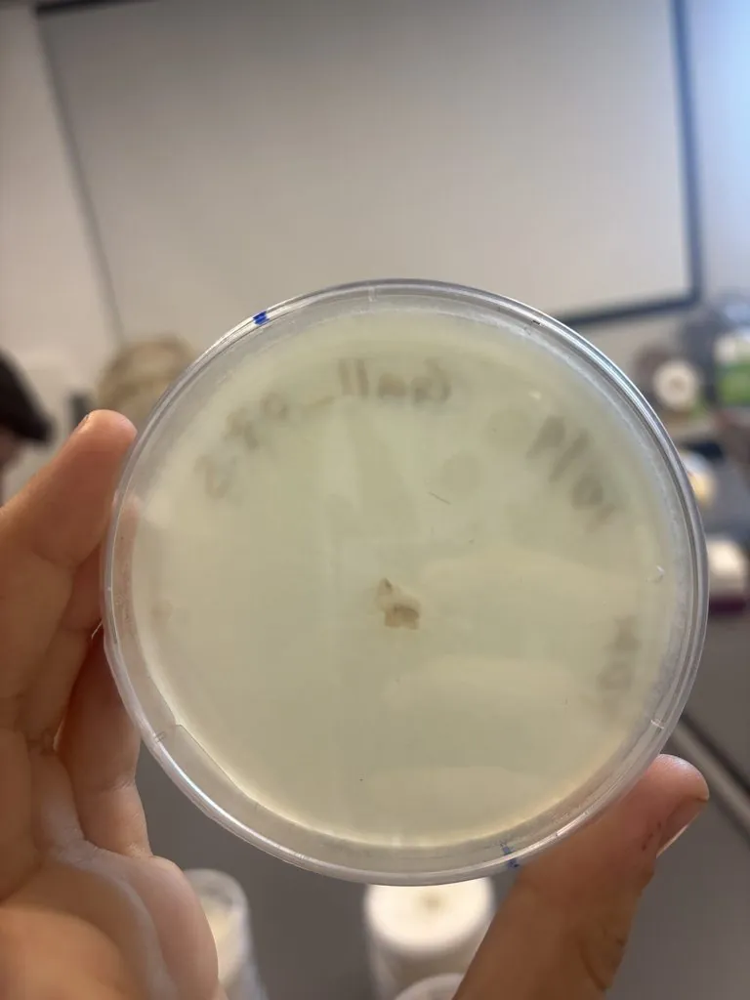

真菌 · 真菌界
里氏木霉 Trichoderma reesei

木霉属丝状真菌，菌落初白后转绿，能高效分泌纤维素酶，是工业酶制剂的主力生产菌，对健康人低毒。
- 分类
- 门子囊菌门纲粪壳菌纲目肉座菌目科肉座菌科属木霉属
- 栖息环境
- 土壤、腐木与纤维材料表面，温暖潮湿处常见
- 地理分布
- 世界性分布，作为工业菌株在全球发酵工厂使用
- 保护级别
- 暂无评估；工业菌株被广泛保藏
物种志
里氏木霉的菌落初期白色絮状，产孢后转为黄绿至深绿色，分生孢子梗分枝，瓶梗呈瓶状，分生孢子球形至椭圆形，壁粗糙。它最初从所罗门群岛的帆布上分离获得，是木霉属中纤维素酶产量最高的种类之一。
里氏木霉广泛用于工业生产纤维素酶、半纤维素酶与蛋白酶，这些酶被用于生物燃料、造纸、纺织、饲料与食品加工。它的纤维素酶系能将秸秆等木质纤维素降解为可发酵糖，是第二代燃料乙醇的关键环节。它对健康人低毒，但大量孢子可致过敏；作为工厂生产菌，其孢子释放需控制。它也有生物防治潜力，可抑制部分植物病原真菌。它的酶制剂已进入洗涤剂、酿酒与果汁澄清等日常生产。
形态与习性
- 菌落初白色絮状，产孢后黄绿至深绿
- 孢子分生孢子球形，壁粗糙，由瓶梗产生
- 生境土壤、腐木与纤维材料表面
- 工业用途生产纤维素酶、半纤维素酶与蛋白酶
- 应用领域生物燃料、造纸、纺织、饲料与食品
- 安全性对人低毒，大量孢子可致过敏
趣味知识
- 里氏木霉最早是从二战期间所罗门群岛的军用帆布上分离出来的，帆布被它“吃”得很快。
- 它是全球纤维素酶的主要生产菌，秸秆变燃料乙醇的关键一步就靠它的酶。
- 它的纤维素酶产量经过数十年诱变育种提高了上百倍，是工业菌株改良的典范。
- 对健康人低毒，但发酵车间孢子浓度高时工人可能出现过敏反应。